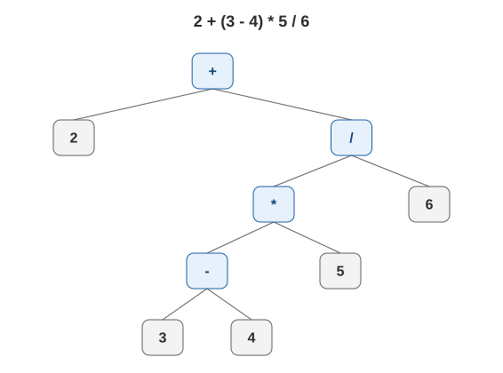
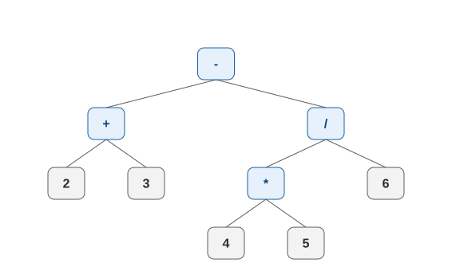

這是我們習慣的運算式，要遵守先乘除後加減的規則：
2 + 3 - 4 * 5 / 6
各位應該也知道，如果希望優先權較低的加減運算先被計算的話，要加上括號，例如：
2 + (3 - 4) * 5 / 6
這些算式中的加減乘除等符號，稱為運算子(operator)；2、3、4 等數字，或者代數或程式碼中的 a、b、c 等變數，稱為運算元(operand)；而括號在運算式中，則是個用於表示優先權的標點符號(punctuator)。
我們也可以跟遞迴樹一樣，把運算式畫成樹，稱為運算樹；其中，我們會讓每個有分支的節點（術語：非葉節點）各自代表一個 operator，而左邊分支代表左邊的 operand，右邊分支代表右邊的 operand；每個 operator 的結果算完以後，往上回傳直到頂端。因此，前面的兩個算式可以分別被畫成：
以及：

在上面的兩棵樹中，我們可以看到運算的順序不同，畫出來的樹也不同。而你如果只看到樹，想用肉眼（用程式的方法，在樹的專屬篇章才會提到）計算出結果的話，有兩種方式：
- 最底下的先算，算完以後把對應的 operator 劃掉，改成計算結果的 operand，依次一直往上。若有多組運算是相同高度時，雖然哪個先算都無所謂，但是建議由左邊先算。
- 跟程式跑遞迴呼叫一樣，先到左邊算一算，再到右邊算一算；回到中間以後，把中間算完再往上回傳。
我們以算式 2 + 3 - 4 * 5 / 6 為例，用遞迴方式計算的流程如下（為了範例的清楚展示，不會再進出的節點會被拔掉）：
而雖然程式語法中，在樹上做計算的順序是固定的，但是把運算樹還原回一行算式的時候，除了把 operator 放在中間以外，是有其他表示方法的。事實上，包含我們最習慣的「operator 放在中間」在內，常被使用的算式表達方式，以及其對應的在樹上的輸出時機有以下三種：
- 前序式(prefix expression, Polish Notation)：operator 在前面，即「operator left-operand right-operand」的格式；先輸出自己，再分別遞迴輸出左邊以及右邊。
- 中序式(infix expression)：operator 在中間，即「left-operand operator right-operand」的格式；先遞迴輸出左邊，再輸出自己，最後遞迴輸出右邊。這個是我們平常習慣的格式。
- 後序式(postfix expression, Reverse Polish Notation)：operator 在後面，即「left-operand right-operand operator」的格式；先遞迴輸出左邊，再遞迴輸出右邊，最後輸出自己。
其中，在二元運算（一個 operator 搭配兩個 operands）的狀況下，只有中序式需要用括號來表示優先權；此外，你如果眼尖的話，可能會發現我們沒有介紹到負號怎麼處理。關於這兩種狀況，就先留給各位在若有興趣知道時自行研讀。以下示範怎樣用肉眼看著運算樹輸出後序式（為了範例的清楚展示，不會再進出的節點會被拔掉），前序的部分可以依此類推：

如果是有了後序式，要把它計算出來的話，也可以利用堆疊來完成；你只需要由左往右掃，並進行以下動作：
- 碰到 operand，則 push 進堆疊。
- 碰到 operator，則 pop 兩個元素出堆疊做計算，將計算結果 push 回堆疊。若 pop 失敗則運算式不合法。
- 處理完輸入後，堆疊裡若恰有一元素，則其為結果，否則為運算式不合法。
程式的實作則如下：
def postfix_expr_calc(expr): stack = [] for e in expr: print(f'Input {e}, current stack {stack}') if isinstance(e, (int, float)): stack.append(e) else: if len(stack) < 2: return None b = stack.pop() a = stack.pop() if e == '+': stack.append(a + b) elif e == '-': stack.append(a - b) elif e == '*': stack.append(a * b) elif e == '/': stack.append(a / b) print(f'New stack {stack}') if len(stack) != 1: return None return stack[0] if __name__ == '__main__': print(postfix_expr_calc([2, 3, '+', 4, 5, '*', 6, '/', '-']))由於後序式的計算非常簡單，因此在電腦裡面經常被使用；至於從中序式轉為後序式的方法，則也可以利用堆疊來進行；你一樣也只需要由左往右掃，並進行以下動作：
- 碰到 operand，則直接輸出。
- 碰到 operator
- 若堆疊為空、頂端為左括號，或頂端 operator 優先權較小，則直接 push 進堆疊。
- 若堆疊頂端 operator 優先權較大或相等，則反覆 pop 與輸出，直到堆疊為空或頂端 operator 優先權較小，再 push 進堆疊。
- 碰到左括號，則 push 進堆疊。
- 碰到右括號，則反覆 pop 與輸出，直到碰上左括號，惟左括號僅 pop 不輸出。
程式的實作則如下：
def infix_to_postfix(expr): stack = [] ret = [] for e in expr: print(f'Input {e}, current stack {stack}, current ret {ret}') if isinstance(e, (int, float)): ret.append(e) elif e in '*/': while len(stack) != 0: if stack[-1] in '*/': ret.append(stack.pop()) else: break stack.append(e) elif e in '+-': while len(stack) != 0: if stack[-1] in '+-*/': ret.append(stack.pop()) else: break stack.append(e) elif e == '(': stack.append(e) else: while len(stack) != 0: if stack[-1] in '+-*/': ret.append(stack.pop()) else: stack.pop() break print(f'New stack {stack}, new ret {ret}') while len(stack): ret.append(stack.pop()) return ret if __name__ == '__main__': print(infix_to_postfix([2, '+', '(', 3, '-', 4, ')', '*', 5, '/', 6]))